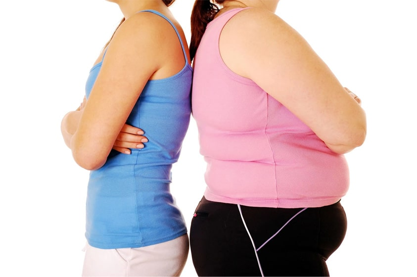
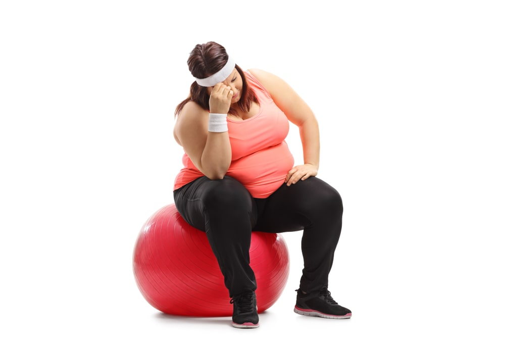
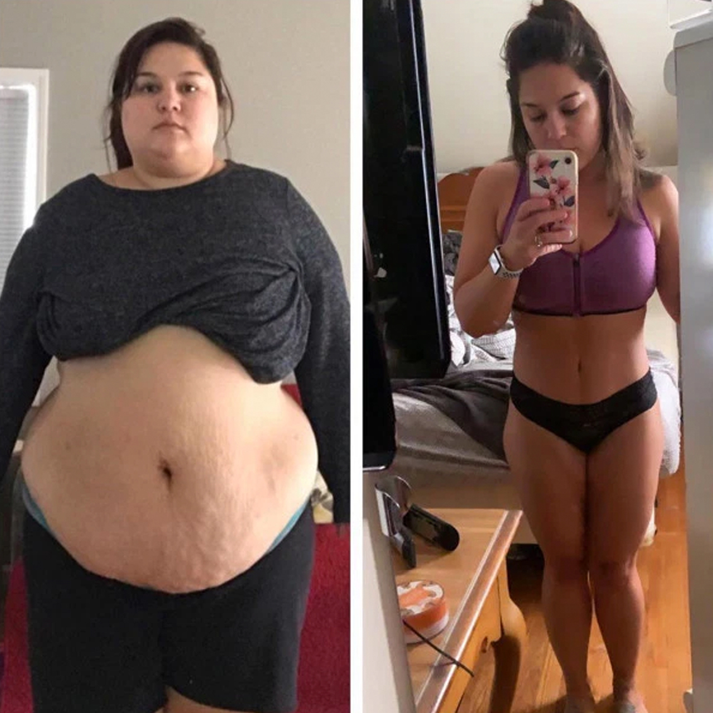
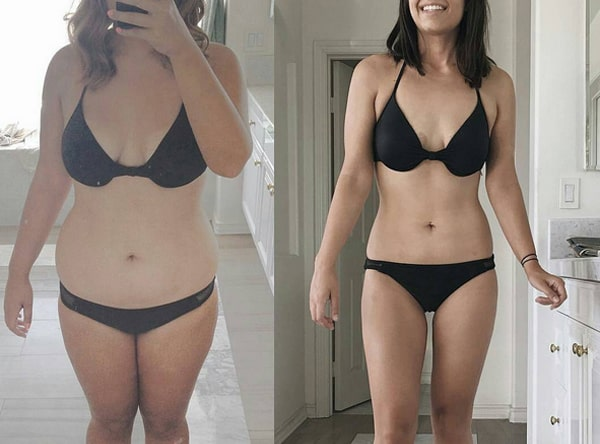
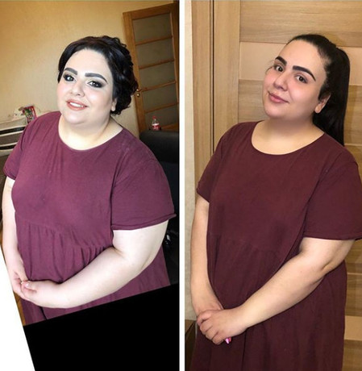
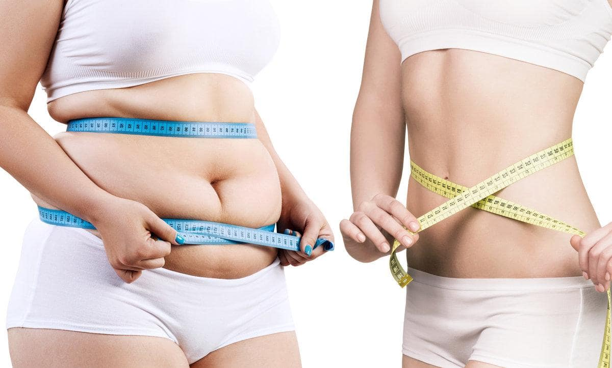
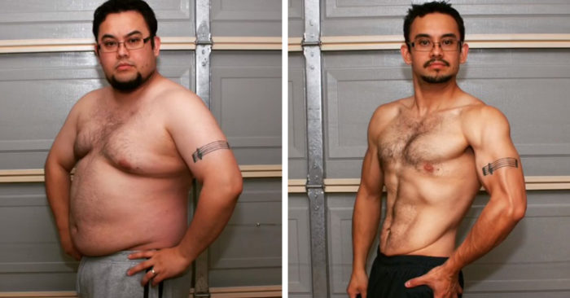

El remedio con el que todos pierden peso:
¡Ahora es fácil perder grasa en las caderas y el estómago después de los 45!
Si alguna vez ha intentado deshacerse del exceso de peso, entonces seguramente sabe que las principales formas de hacerlo son las dietas y el ejercicio, y como medidas extremas están las píldoras y la liposucción. Pero el tiempo ha demostrado que ninguno de estos métodos es lo suficientemente efectivo, después de todo, el número de personas con sobrepeso sigue aumentando.
Hoy en día, la situación ha cambiado dramáticamente con la aparición de un remedio que estimula la pérdida de peso a través de procesos naturales. Pero no nos adelantemos. El director del Instituto de dietética, Pedro Belizan, hablará de todo en orden.
Pedro es médico con más de veinte años de experiencia. Es especialista de alto nivel en gastroenterología y dietología. Ha participado activamente en diversas conferencias e investigaciones sobre el problema de la lucha contra el exceso de peso. Más de 7, 000 mujeres se han deshecho con éxito de los kilos, pudieron volverse más saludables, más bellas y más seguras de sí mismas.

Autor del artículo: Pedro Belizan
Sobrepeso: no solo un problema estético, sino una amenaza mortal.
La obesidad es el flagelo del siglo XXI. Es una verdadera pandemia mortal. Los médicos no paran de alarmarse porque más del 30% de la población mundial sufre de sobrepeso. El exceso de peso causa no solo problemas psicológicos, sino también un conjunto de consecuencias que amenazan la vida, entre las que se encuentran:
- diabetes mellitus;
- ataque cardíaco;
- derrame cerebral;
- pancreatitis;
- venas varice;
- ciclo menstrual irregular e infertilidad en mujeres;
- impotencia en los hombres;
- hipertensión.
Estas consecuencias conducen a un gran número de muertes. Según la organización mundial de la salud, entre 30 y 50 mil personas mueren cada día a causa de los efectos de la obesidad en el mundo.

En la gran mayoría de los casos, las fallas en el metabolismo es la causa del sobrepeso
Todos tenemos un mismo amigo que come comida rápida casi todo el día, pero sigue siendo delgado. Y está el opuesto que son aquellas personas que engordan con solo mirar la comida. Este fenómeno ha interesado a los científicos durante mucho tiempo, y estudios recientes sugieren que las personas continúan aumentando de peso debido a trastornos en los procesos metabólicos.
Por qué no puede perder peso con las dietas
La dieta es un gran estrés para el cuerpo, que la percibe como una señal que amenaza la vida. Los mecanismos de defensa se activan y para evitar la muerte, comenzamos a almacenar activamente cada caloría que nos llega con la comida. Al mismo tiempo, la cantidad de calorías gastadas en la actividad vital se reduce drásticamente. Esencialmente, el cuerpo almacena grasa para sobrevivir a una situación de huelga de hambre.
El ejercicio no es la panacea
Lo que pasa es que al practicar deportes, solo se gasta una pequeña cantidad de energía. La investigación realizada por los científicos sugiere que la población de tribus salvajes que se dedican a la caza y la recolección y están constantemente en movimiento, no gastan energía más que la persona promedio. Por lo tanto, la teoría de que la pandemia mundial de obesidad está relacionada con un estilo de vida sedentario es errónea. Además, la actividad física puede incluso inhibir el proceso de pérdida de peso porque cuanto más nos movemos, más queremos comer. Por lo tanto, compensamos con creces la falta de calorías que surgió debido a los deportes, e incluso comemos más y, por el contrario, engordamos.

¿Qué hacer?
Los científicos del Instituto de dietética pudieron inventar un medicamento efectivo que reduce el peso en el menor tiempo posible y sin consecuencias para el cuerpo.
El remedio fue llamado W-loss. Es un quemador de grasa que acelera los procesos metabólicos con la ayuda de una composición natural cuidadosamente seleccionada. Gracias a W-loss, la grasa comienza a derretirse tres veces más rápido.

¿Qué es W-loss?
Cuando el cuerpo necesita vitaminas, comemos frutas y verduras. Si no tenemos suficiente proteína, comemos carne. Pero, ¿por qué, si tenemos que perder peso, dejamos de comer? Como los científicos pudieron descubrir, este proceso no funciona así.
El hecho es que si comenzamos a ganar peso sin control, el cuerpo nos da señales de que carece de oligoelementos, que son responsables de la descomposición de la grasa.
W-loss es un concentrado de gotas totalmente natural que incluye extractos que aumentan el metabolismo en un 300% y la lipólisis (proceso de descomposición de las grasas) casi 8 veces.
Todos los componentes de W-loss están dirigidos a quemar el exceso de células grasas, tanto subcutáneas como viscerales. Este remedio limpia el cuerpo de toxinas y desechos, ayuda a mejorar el tono de la piel y previene su flacidez. Gracias a W-loss, podrá perder de tres kilos en la primera semana:
Día 1
La etapa preparatoria antes del inicio de la pérdida de peso segura: limpieza del tracto gastrointestinal, restauración del equilibrio de líquidos en el cuerpo.
Día 2
W-loss elimina el exceso de colesterol y glucosa. Actuando sobre los receptores responsables de reconocer los alimentos dulces reduce los antojos de azúcar.
Día 3
Comienza la etapa de activación de la quema de grasa.
Día 4
Los procesos metabólicos se aceleran, el proceso de deposición de grasas se ralentiza.
Día 5
W-loss corrige el proceso de absorción de proteínas y carbohidratos. Las proteínas que vienen con los alimentos se transforman en tejido muscular, los carbohidratos se eliminan sin ninguna alteración.
Día 6
El funcionamiento del tracto gastrointestinal se normaliza.
Día 7
Siente oleadas de energía debido al efecto tonificante y una mejora del metabolismo.
¡Acelerar el metabolismo gracias a W-loss conduce a la pérdida de grasa en áreas problemáticas de hasta 500gr por día! Además, W-loss confirmó su efectividad en casos en que el incremento de peso está asociado a desequilibrios hormonales.
Consejos de uso de W-loss
Para mejorar el efecto, se recomienda tomar el medicamento en ayunas.
Resultados de pacientes que consumieron W-loss

“Solo estoy al comienzo de mi camino para perder peso, pero ya veo resultados que no pude lograr con ningún otro remedio. ¡Seguiré tomando W-loss en el futuro!”

“¡Gracias a W-loss, me convertí en una persona completamente diferente! Finalmente, puedo usar las cosas que me gustan, y no las que solo me quedan bien".

“Después del embarazo no pude bajar de peso, solo W-loss me ayudó. Mi esposo comenzó a verme de nuevo como a una mujer y yo me volví a enamorar de mí misma”.
Comentario del especialista
"Durante la pérdida de peso, lo más importante es no dañar su cuerpo. Por desgracia, no todas las formas de perder peso le permiten mantenerse saludable. Lo que está claro es que no podrá seguir una dieta de por vida. Las personas a menudo caen en el círculo vicioso de bajar y subir de peso porque no tienen fuerza de voluntad. Comienzan a buscar formas alternativas: van a operaciones peligrosas, toman píldoras dudosas. La mayoría de los pacientes llegan a mí ya en un estado deplorable, con sistemas inmunitarios y hormonales destruidos, con insuficiencia renal, con numerosos problemas gastrointestinales.
No me canso de repetir: debe perder peso con cuidado y con la ayuda de remedios seguros. Por ejemplo, W-loss proporciona una pérdida de peso natural, ya que influye positivamente sobre el metabolismo y la quema de grasa corporal.
En mi opinión, es el mejor producto para eliminar el exceso de peso".
Resultados de estudios clínicos
Un grupo de voluntarios con sobrepeso conformado por 4.386 personas bebió W-loss durante un mes de acuerdo con las instrucciones. Como resultado, se obtuvieron los siguientes datos:
- El 92% de los estudiados adelgazó más de 10 kilos
- 100% de los estudiados notaron una mejora en su bienestar general
- El 100% de los estudiados observó mejoras en el funcionamiento del tracto gastrointestinal

¿Dónde comprar W-loss?
Hace muy poco nuestro país lanzó un programa que tiene como objetivo hacer que W-loss sea accesible para todas las personas, independientemente de sus capacidades financieras.
Según los términos de la promoción, hasta el , inclusive, los compradores podrán comprar W-loss con descuento. Después de este plazo, el programa se detendrá.
Para comprar W-loss con descuento, simplemente deje su solicitud en el campo a continuación:
Lea más historias de personas que perdieron peso con W-loss:

La mejor forma de perder peso que he probado: menos 40 kilogramos y un cuerpo tonificado

Perdí fácilmente 30 kilos y comencé una nueva vida. Mi método para bajar de peso después de 50 años

Mi historia real de perder peso sin dañar la salud y la dieta.
¡Necesito urgentemente este remedio! Dejé la solicitud, espero que W-loss para ese momento no se lo hayan llevado todito
¡Lo primordial es seguir las instrucciones! Así, en un mes, no te reconocerás en el espejo
Gracias a W-loss, pude deshacerme de 23 kilogramos. Antes pesaba 89 kilos, era una tía muy floja y pesada, aunque no es que sea muy vieja. Cuando comencé a beber W-loss no creía en su efectividad. Pero después de una semana noté los primeros resultados: ¡los pantalones viejos me quedaban grandes, el tamaño de mi cintura disminuyó 7 centímetros! Me tomó dos meses llegar a mi forma perfecta.
Y por alguna razón, solo bajé 4 kg en un mes... mi peso inicial era de 58 kg. Ahora peso 54
Bueno, eso es comprensible. ¿Querías quedar desnutrida? ¡Tienes el peso perfecto!
Acabo de recibir el paquete de W-loss hoy, me siento con fuerzas antes de comenzar a beberlo) ¡sus resultados son especialmente impresionantes, chicas!
Bajé 36 kg con W-loss en 3 meses, aquí está mi resultado:

Un nutricionista me aconsejó W-loss, pero no creía mucho en sus palabras. Pensé que me estaba dando otra mierda. Ahora veo que esto es realmente un remedio que funciona. Ordené algunos paquetes
Oooh, hace mucho que conozco este producto. ¡Y lo aconsejo a todos! Pensé que cuando tienes más de 50 años, es demasiado tarde para empezar a perder peso, todavía no va a funcionar. ¡Pero no, con W-loss todo es posible!